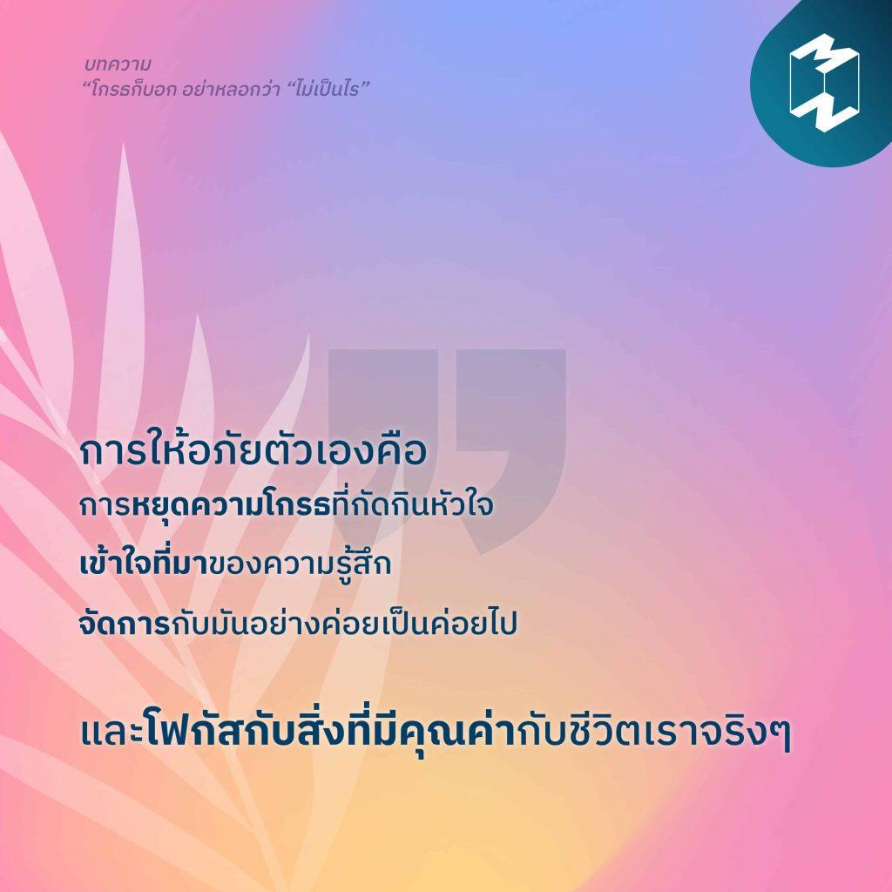

3)“โกรธก็บอก อย่าหลอกว่า “ไม่เป็นไร”
“การให้อภัยตัวเองคือการหยุดความโกรธที่กัดกินหัวใจ เข้าใจที่มาของความรู้สึก จัดการกับมันอย่างค่อยเป็นค่อยไป และโฟกัสกับสิ่งที่มีคุณค่ากับชีวิตเราจริงๆ” “คู่รักที่มีชีวิตคู่ที่ยืนยาว ไม่ได้มาจากการหล่อเลี้ยงด้วยความรักที่หวานชื่นเพียงอย่างเดียว และไม่ใช่การหลีกเลี่ยงการกระทบกระทั่งอีกเช่นกัน แต่เป็นการเผชิญปัญหาและจัดการกับความขัดแย้งอย่างตรงไปตรงมา” เลิกเก็บกดความรู้สึกและรักษาความสัมพันธ์ว่า ‘ไม่เป็นไร’ แล้วลองมาทำความเข้าใจตัวเขา ตัวเรา และการรับมือความขัดแย้งในความสัมพันธ์เสียใหม่ ติดตามอ่านบทความ “โกรธก็บอก อย่าหลอกว่า “ไม่เป็นไร” เพราะการมองข้ามปัญหาและทำเป็นให้อภัย อาจทำร้ายความสัมพันธ์มากกว่าที่คิด”